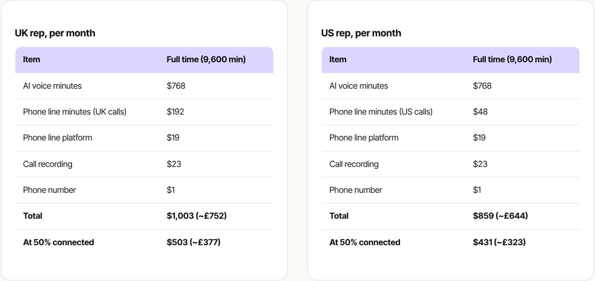
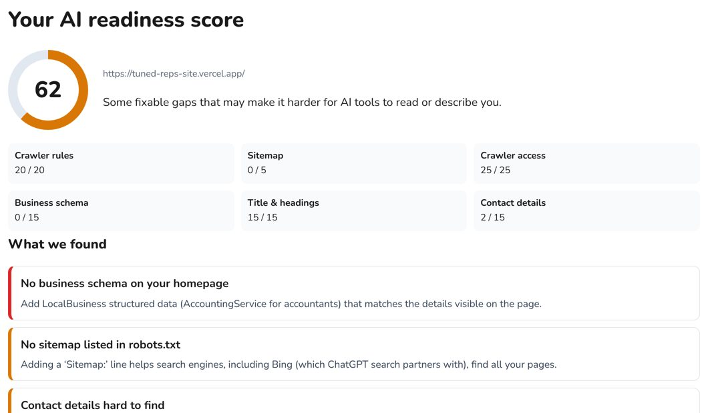

Source: Taylor’s notes on Tuned Reps and GPT Visibility, 22 October 2026: 14 jobs each, 28 in total.
Presenter notes
Hook, about 20 seconds. Click 1: the question writes itself on. SAY: “How powerful is Grok Bot, really? Not in a demo. In two businesses I actually run.” Click 2: “Twenty-eight jobs. Two live businesses. And ten of them are worth copying today.”
Source: Taylor’s notes on Tuned Reps and GPT Visibility, 22 October 2026. Schedule in UK time.
Source: Taylor’s notes, 22 October 2026. Every line is a real scheduled job, in UK time.
Presenter notes
About 30 seconds. Click once and let the log run. SAY: “Seven in the morning it is test-calling its own sales reps. Nine, it is emailing a hundred and fifty businesses. Lunchtime it publishes a guide. Four o’clock it is following up warm leads. Every hour it upgrades itself. That is one weekday.” Every line is a real scheduled job from the notes, not an illustration.
3 / 00 / The countdown
The top 10
The countdown
The top 10
Picked from the 28 jobs Grok Bot runs across two businesses.
1AI reps that make real calls
2£752 a month, full time
3Tested every morning
4One upgrade every hour
5A free check that sells
6150 emails every weekday
7It spots who’s interested
8The site upgrades itself
9One email every evening
10Nothing public without your yes
Source: chosen from the 28 jobs in Taylor’s notes, 22 October 2026, for impact and for what viewers can copy.
Presenter notes
About 20 seconds. SAY: “I went through all twenty-eight and picked the ten that matter most: the ones that will impress you and the ones you can copy. Let’s count them down.” The rungs build from number 10 to number 1.
4 / 01 / Tuned Reps
Tuned Reps: it makes the calls
01
Chapter · Tuned Reps
It makes the calls
Source: Tuned Reps, a Pecuna Factorem company (tuned-reps-site.vercel.app).
Presenter notes
Chapter pause, about 10 seconds. SAY: “Business one: Tuned Reps. AI sales reps that pick up the phone.”
5 / 01 / Tuned Reps · #1
It makes real phone calls
Top 10 · #1
It makes real phone calls
Prospect“Is this a sales call?”
Charlotte (UK) · Madison (US) · always say they’re AI
Looks it up liveApproved answers from Supabase: objections, FAQs, compliance, offers.
Real calendarToday’s date, and your booking link by email or WhatsApp.
Source: Taylor’s notes, 22 October 2026: the xAI console (Charlotte and Madison), the dashboard Knowledge tab and Supabase. No call results are claimed.
Presenter notes
Number 1, about 60 seconds. SAY: “Two AI sales reps. Charlotte calls in the UK, Madison in the US. They open the call, handle objections and book strategy calls, and they always say they’re AI.” Then: “Mid-call, they look up approved answers in our own database instead of making things up, and they know today’s date from the real calendar, so no invented meeting times.” SHOW: Charlotte and Madison in the xAI console, then the Knowledge tab. This was a custom build, not a template. Say nothing about booking rates: none are claimed.
6 / 01 / Tuned Reps · #2
£752 a month, full time
Top 10 · #2
£752 a month, full time
A rep on calls for all 9,600 minutes a month. Every line costed on the website.
At 50% connected: about £377 (UK) and £323 (US).
~£752
Charlotte · UK
~£644
Madison · US
Source: tuned-reps-site.vercel.app, running costs, read 22 October 2026. $1,003 and $859 at about £0.75 per $1.
Source: tuned-reps-site.vercel.app, running costs, read 22 October 2026: $1,003 (UK) and $859 (US) for 9,600 minutes, at about £0.75 per $1.
Presenter notes
Number 2, about 40 seconds. SAY: “A rep on the phone full time, every minute of an eight-hour day, costs about seven hundred and fifty-two pounds a month in the UK and six hundred and forty-four in the US.” Then the honest version: “Realistically it’s connected about half the time, so about three seventy-seven and three twenty-three.” Do not compare with a human salary on screen; no salary figure is sourced.
7 / 01 / Tuned Reps · #2
Every line is on the website

Real page: tuned-reps-site.vercel.app, running costs
Source: tuned-reps-site.vercel.app, “What it costs to run a rep”, captured 22 October 2026.
Presenter notes
About 20 seconds. Click 1: the page glides in to the UK total. Click 2: the highlight. SAY: “And every line of that is on the website: voice minutes, phone minutes, recording, the number itself. Down to the dollar.”
8 / 01 / Tuned Reps · #3
Tested every morning
Top 10 · #3
Tested every morning
17:00: three test calls per rep, realistic objections
2Every answer scored out of 100
38:00: it fixes what it can
4Wording changes wait for your yes
5A pass/fail summary lands in your chat
Source: Taylor’s notes, 22 October 2026: the Test Calls and Review tabs on the dashboard.
Presenter notes
Number 3, about 45 seconds. SAY: “Every morning at seven, three test calls run on each rep with realistic buyer objections. Every answer is scored out of a hundred against the wording I approved. At eight, it fixes what it can, queues wording changes for my yes, and sends me a pass or fail.” SHOW: the Test Calls tab.
9 / 01 / Tuned Reps · #3
Every answer scored
Top 10 · #3 · scores illustrative
Every answer, scored out of 100
Scored /100
Charlotte“It’s too expensive”94
Madison“Send me an email”58
Charlotte“Who gave you my number?”97
8:00 fixes
Source: Taylor’s notes. 7:00 test calls, 3 per rep; 8:00 fixes run. The scores shown are examples.
Source: Taylor’s notes, 22 October 2026. The scores shown are examples, not real results.
Presenter notes
About 30 seconds. One card per click. SAY: “Pass, and it rides on. Fail, and it drops into the eight o’clock fixes.” The scores are examples: show real ones from the Test Calls tab when recording. It also writes ten new objections a day, five UK and five US, for your approval.
10 / 01 / Tuned Reps · #4
One upgrade every hour
What prospects actually say
“I’mnotinterested.”
“Sendmeanemail.”
“Wrongnumber.”
“Takemeoffyourlist.”
Source: Taylor’s notes, 22 October 2026. Today’s hourly upgrade: each one understood in dozens of everyday phrasings.
Source: Taylor’s notes, 22 October 2026, and the progress log in the Tuned Reps GitHub repository.
Presenter notes
Number 4, about 40 seconds. One phrase per click. SAY: “Every hour, a routine makes one small upgrade. Today it taught the reps to understand these four.” After the fourth: “Tested and saved, without me touching it.” SHOW: the progress log.
11 / 01 / Tuned Reps · #4
However they say it
Top 10 · #4 · example phrasings
However they say it
“I’m not interested”
Not for me, thanksWe’re all sortedNo ta
“Send me an email”
Just email it overPop it in an emailBung me an email
“Wrong number”
No one by that nameYou’ve got the wrong personNever heard of them
“Take me off your list”
Don’t ring me againRemove my numberStop calling me
Source: Taylor’s notes, 22 October 2026: “in dozens of everyday phrasings”. The twelve phrasings shown are examples.
Presenter notes
About 25 seconds. SAY: “Because nobody says ‘take me off your list’ like that. They say ‘don’t ring me again’, or ‘no ta’. It learned dozens of ways of saying each one.” The headings are exact; the phrasings are examples, not a copy of the real list.
12 / 02 / GPT Visibility
GPT Visibility: it runs a business
02 / GPT Visibility
It runs a business
A free tool, cold email, content and a website that improves itself.
Source: gptvisibility.co.uk.
Presenter notes
Chapter pause, about 10 seconds. SAY: “Business two: GPT Visibility. This one, the bot pretty much runs.”
13 / 02 / GPT Visibility · #5
A free check that sells
Top 10 · #5
A free check that sells
Any business enters its website and gets a score out of 100 in seconds. It costs nothing to run.
Source: Taylor’s notes, 22 October 2026, and gptvisibility.co.uk/check.
Presenter notes
Number 5, about 30 seconds. SAY: “The hook for the whole business: a free check. Any business types in its website and gets a score out of a hundred in seconds. It costs us nothing to run.” Be accurate: the page says it is a technical readiness check, not a live ChatGPT test.
14 / 02 / GPT Visibility · #5
A real result

Real result · 22 Oct
62 / 100No schema = the fix we sell
Source: gptvisibility.co.uk/check on tuned-reps-site.vercel.app, 22 October 2026.
Source: gptvisibility.co.uk/check, run on tuned-reps-site.vercel.app, 22 October 2026.
Presenter notes
About 40 seconds. Click 1: circle the score. Click 2: box the schema gap. Click 3: the note. SAY: “I ran it on our own Tuned Reps site: sixty-two. Every gap it finds is a reason to buy the paid audit or the fix sprint.” Known issue to fix before recording: the result tells every business to add “AccountingService for accountants” schema, even a sales-rep site. Re-run and re-capture once it is fixed.
15 / 02 / GPT Visibility · #6
150 emails every weekday
Top 10 · #6
150 emails every weekday
0
1
2
3
4
5
6
7
8
9
0
1
2
3
4
5
6
7
8
9
0
1
2
3
4
5
6
7
8
9
personalised cold emails, sent at about 9am, every bounce and opt-out recorded
Source: Taylor’s notes, 22 October 2026: the hello@ Sent history and the 4:15pm daily report.
Presenter notes
Number 6, about 40 seconds. SAY: “About nine every weekday morning, it finds UK businesses, mostly coaches, and writes each one a tailored email offering the free check. A hundred and fifty a day. It records every send and bounce, honours opt-outs and keeps a do-not-contact list. Nobody lifts a finger.”
16 / 02 / GPT Visibility · #7
It spots who’s interested
Top 10 · #7
It spots who’s interested
9amtailored email goes out
They clickand run the free check
4pmthe bot spots it
Follow-upwith their real score
Warm lead5 on 22 October
Source: Taylor’s notes, 22 October 2026.
Source: Taylor’s notes, 22 October 2026.
Presenter notes
Number 7, about 40 seconds. SAY: “At four, it checks who ran the free check after getting our email, then writes them a personal follow-up using their real score and the gaps it found.” SHOW: a follow-up in Gmail Sent.
17 / 02 / GPT Visibility · #7
From 150 emails to 5 warm leads
Top 10 · #7 · 22 October
From 150 emails to 5 warm leads
Within hours of the emails going out, five people had run the free check. Each got a follow-up built on their own score.
150 emails
5 warm leads
Source: Taylor’s notes, 22 October 2026. Each small dot is 10 emails; each gold dot is one lead.
Source: Taylor’s notes, 22 October 2026. One day’s result, not an average or a forecast.
Presenter notes
About 25 seconds. SAY: “On the twenty-second of October that found five warm leads, within hours of the emails going out.” It is one day’s count from the daily report; do not present it as a rate.
18 / 02 / GPT Visibility · #8
The site upgrades itself
Before
6
Trades and home services
Clinics and healthcare
Law firms
Agencies
Local services
Accountants and bookkeepers
After one afternoon · 22 Oct
20
Trades and home services
Clinics and healthcare
Law firms
Agencies
Local services
Accountants and bookkeepers
Coaches
Financial advisers
Mortgage brokers
Tutors and tuition
Estate agents
Therapists and counsellors
Wedding suppliers
Vets
Recruitment agencies
Architects
IT support and MSPs
Gyms and personal trainers
Aesthetics clinics
Care homes and home care
Source: gptvisibility.co.uk/industries, read 22 October 2026. Plus a new guide every weekday.
Source: gptvisibility.co.uk/industries and /guides, read 22 October 2026.
Presenter notes
Number 8, about 45 seconds. SAY: “Every afternoon at about half two it adds features and fixes and puts them live. Yesterday it built fourteen new industry pages in one go: six industries to twenty. And every weekday at about half one it researches and publishes a new guide. Yesterday’s was how ChatGPT handles ‘near me’ searches.” SHOW: the industries and guides pages.
19 / 03 / You stay the boss
You stay the boss
Tuned Reps
GPT Visibility
You stay the boss
Chapter 3 of 3
You stay the boss
Source: Taylor’s notes, 22 October 2026.
Presenter notes
Chapter pause, about 10 seconds. SAY: “So who’s in charge? Still me.”
20 / 03 / You stay the boss · #9
One email every evening
Top 10 · #9
One email every evening
Inbox · mock-up
GPT Visibility daily report – 22 October 202616:15
Outbound Caller daily update18:00
Monday progress updateMon 08:29
The 4:15pm report covers
What went out
What shipped
The database numbers
What’s waiting on you
Source: Taylor’s notes, 22 October 2026. The inbox layout is a mock-up; the subjects, times and sections are from the notes.
Presenter notes
Number 9, about 35 seconds. SAY: “I don’t check twenty dashboards. One email at quarter past four: what went out, what shipped, the numbers and what’s waiting on me. Tuned Reps sends its own update at six, and on Mondays I get the weekly summary.” SHOW: the real report in the inbox.
21 / 03 / You stay the boss · #10
Nothing public without your yes
Top 10 · #10
Nothing public without your yes
Runs on its own
Test calls and fixes · cold emails and follow-ups · guides and site upgrades · bug checks · reports
Waits for your yes
X posts and replies · Reddit answers · outreach changes · new routines · new wording for the reps
Source: Taylor’s notes, 22 October 2026.
Presenter notes
Number 10, about 40 seconds. SAY: “Here’s what makes it safe. Emails, guides, fixes and reports run on their own. But anything public, X posts, Reddit answers, outreach changes, new routines, new wording for the reps, waits for my yes.” The reps also follow UK and US calling rules: AI disclosure, calling hours, opt-outs, TPS and Do Not Call.
22 / 03 / You stay the boss · #10
Zero without your say-so
0public posts, outreach changes or new routines without your say-so
Waits for your yesX · Reddit · outreach · routines
Source: Taylor’s notes, 22 October 2026.
Presenter notes
About 15 seconds. Let the stamp land. SAY: “Zero. Not one.”
23 / 03 / You stay the boss
And 11 more jobs
Not in the top 10
And 11 more jobs
10 new objections5 UK, 5 US, every morning
Live dashboard8 tabs for the reps
A website in one eveningthree packages, live costs
Onboarding kitplaybook, prompts, rehearsals
20 sponsor pitchesa day, at £450 a month
NewsletterTue, Thu and Sun at 8am
Daily site checkevery page, link and the checker
X researchscans, then drafts for you
Reddit answersdrafted for you to post
Free directories3 more today, paid ones skipped
Stripe and lead tracker£295 and £495 links live
28jobs in total
Source: Taylor’s notes, 22 October 2026.
Presenter notes
About 30 seconds. SAY: “And that’s only ten. It also writes ten new objections a day, pitches twenty sponsors, sends a newsletter, scans X, drafts Reddit answers, lists us on free directories and set up our Stripe links.” Point at two or three; do not read all eleven.
24 / 04 / Close
It still asks first
Grok Bot · waiting for you · illustrative
Draft X post: “Can ChatGPT read your website? Free check, 10 seconds.”
Not nowYes, post it
It runs while you sleep. It still asks first.
Source: Taylor’s notes, 22 October 2026. The draft post is illustrative.
Presenter notes
Close, about 25 seconds. Click 1: the card. Click 2: the yes. Click 3: the line. SAY: “That’s how powerful it is. It runs a whole business while I sleep, and it still asks my permission for anything public.”
25 / 04 / Close
Book 20 minutes with Taylor
Invitation20 minutes
Call20
Strategy call with Taylor
Which of these ten jobs your business should hand to a bot first.
Source: tuned-reps-site.vercel.app: “Strategy calls are 20 minutes with Taylor.”
Presenter notes
Call to action, about 15 seconds. SAY: “If you want to know which of these your business should hand to a bot first, book twenty minutes with me. And if you want to see your own score, the free check is at gptvisibility.co.uk/check.” Link both in the description.
Built from Taylor’s notes on Tuned Reps and GPT Visibility (22 October 2026). Costs, packages, industry pages, guides and the free-check result were read and captured from tuned-reps-site.vercel.app and gptvisibility.co.uk on 22 October 2026. The 150 emails a day, the 5 warm leads (22 October), the schedule and the hourly upgrades are Taylor’s reported figures, not independently checked. No call results, booking rates or revenue are claimed. The test-call scores, example phrasings, inbox layout and draft X post are illustrative. Designs were approved in the Variety Pack on 22 and 23 October 2026.